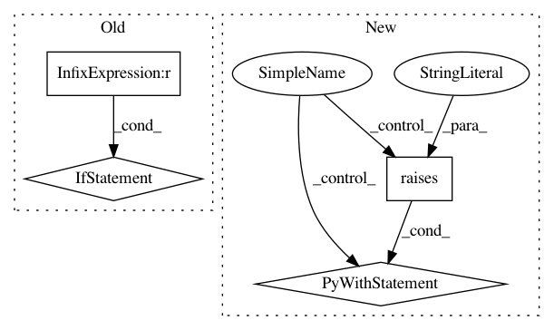

91473147e57464173dedb00ce20f3d5aefd883bd,mne/preprocessing/tests/test_ica.py,,test_ica_noop,#Any#Any#Any#,168
Before Change
ica.fit(raw)
raw_new = ica.apply(raw.copy())
// not a no-op
if max_pca_components == 8: // XXX this fails: or n_pca_components == 8:
assert not np.allclose(raw.get_data(), raw_new.get_data())
return
// XXX this case should warn?
if max_pca_components == 10:
assert ica.max_pca_components_ == 10
// XXX setting n_components to something safe prevents the blowup, maybe
// we don"t need max_pca_components as float? For example setting the
After Change
ctx = pytest.warns(RuntimeWarning, match=".*unstable.*integer <= 9")
bad = True // pinv will fail
elif n_components == 0.9999 and n_pca_components == 8:
ctx = pytest.raises(RuntimeError, match="requires 9 PCA values.*but")
bad = "exit"
else:
bad = False // pinv will not fail
ctx = nullcontext()
with ctx:
ica.fit(raw)
assert ica._max_pca_components is None
if bad == "exit":
return
raw_new = ica.apply(raw.copy())
In pattern: SUPERPATTERN
Frequency: 3
Non-data size: 4
Instances
Project Name: mne-tools/mne-python
Commit Name: 91473147e57464173dedb00ce20f3d5aefd883bd
Time: 2020-10-12
Author: larson.eric.d@gmail.com
File Name: mne/preprocessing/tests/test_ica.py
Class Name:
Method Name: test_ica_noop
Project Name: dask/dask-ml
Commit Name: 5039cf803debf7a859f71f882fa5af46fc18bb5a
Time: 2019-10-30
Author: TomAugspurger@users.noreply.github.com
File Name: tests/test_pca.py
Class Name:
Method Name: test_pca_validation
Project Name: mne-tools/mne-python
Commit Name: ecf639298f7bc9b9e9406a712eb852cb95586c74
Time: 2020-09-25
Author: larson.eric.d@gmail.com
File Name: mne/tests/test_filter.py
Class Name:
Method Name: test_notch_filters